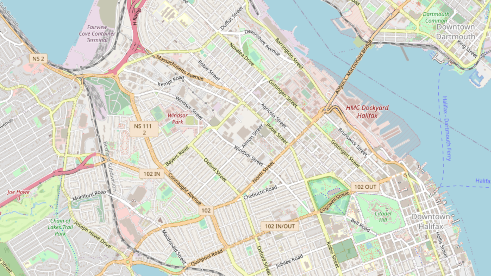
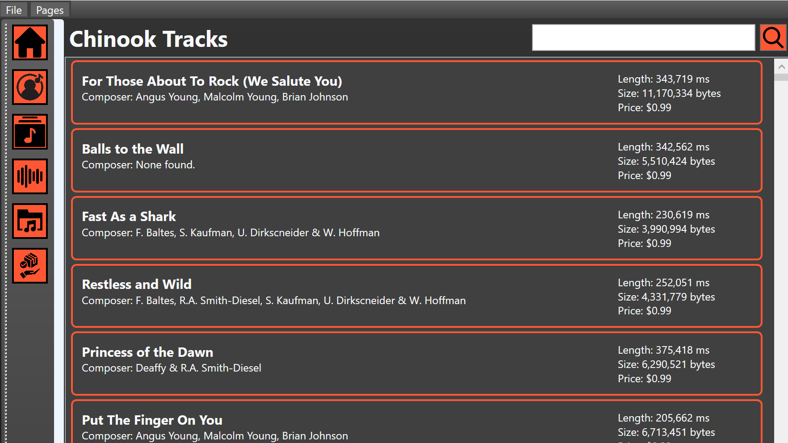
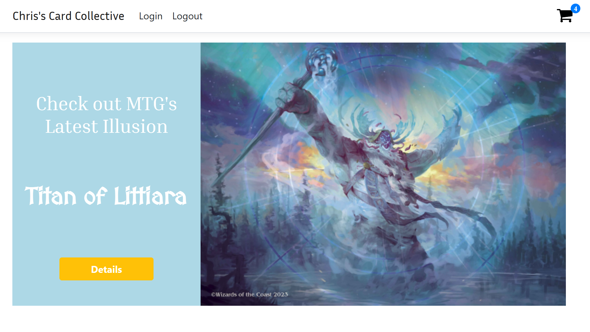

I'm an IT Programming NSCC graduate. I'm looking to become a software developer, I have a variety of skills and knowledge in

In my mobile app development course, I developed a bus tracking application
for android platforms using Halifax Transit's real-time API similar to other
transit APIs such as the city of Toronto's. This project helped build my
familiarity with reading and utilizing API systems in mobile development.
The primary goal was to create a user-friendly application with smooth
navigation and an intuitive interface while adhering to modern coding
practices. The app was built using Kotlin, Android Studio, and with MapBox
to provide an interactive map for tracking buses in real time using popular
development languages, tools, and software.

In my Windows Programming in C# course, I was tasked with developing a concept
music store using the WPF Application framework. This was to help learn about
XAML and build upon my C# knowledge in topics such as events/event handlers,
databinding, and LINQ queries. For this project, I utilized the Chinook database
as a backend, enabling my app to display information about Artists, Albums,
Tracks, Music Catalogs, and Customer Orders. I implemented data retrieval using
Entity Framework and leveraged WPF's data binding capabilities to dynamically
display and update content in the user interface. This was my first big project
developing a WPF application and I learned a lot about XAML and C#.

For my Web Application Programming course, I was tasked with developing a web
application using the ASP.NET Razor Pages framework, with SQLite as the backend
database engine. In this project, I learned how to implement backend functionality,
primarily CRUD operations, and integrate them into my web application. For this
project, we had to follow predetermined requirements, but the site's theme and
topic were open-ended. I chose to develop an online marketplace where users could
create accounts. As a test case, I decided to put the project theme around users
creating an account and selling Magic The Gathering cards.